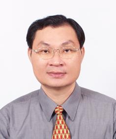

|  | 劉 建 源 | |
| 職稱 | 副教授 | |
| 電子信箱 | cyliu@gcloud.csu.edu.tw | |
| 電話 | +886-7-735-8800 ext.3707 | |
| 傳真 | 請改用Email | |
| 研究室 | 03C0601 | |
| 實驗室 | 03B0602 | |
1. 發明專利(申請中)-居家長照社區戶聯網求助系統
2. 新型專利(申請中)-點滴管壓止裝置
3. 發明專利(第104122877號，審查中)-問答自動彙整系統
4. 發明專利(第105104947號，審查中)- 智慧伴讀裝置
5. 新型專利(M524285)-大型車側邊之偵測與提醒系統
6. 新型專利(M518186)-汽車停車邊界預警裝置
7. 新型專利(M516805)-汽車天窗的遙控關閉結構
8. 新型專利(M511539)-電捲門的超音波感測防夾結構
9. 新型專利(M511449)-後視鏡防碰撞之警示燈結構
10. 新型專利(M503921)-四肢強健促進裝置
11. 新型專利(M514041)-智慧家庭多通訊介面閘道器
12. 新型專利(M496881)-開關盒之擴展結構。
13. 新型專利(M493540)-多段式活動空間一氧化碳氣體安全監控器。
14. 新型專利(M487498)-無線雙向搖桿式語音求助器。
15. 新型專利(M462210)-使用紅外線感應的汽車室內小燈調光器。
16. 新型專利(M469245)-新型無線式汽車方向盤轉角量測裝置。
17. 新型專利(M465571)-家庭用電計量提醒裝置。
18. 新型專利(M465640)-無線天氣感測裝置。
19. 新型專利(M462210)-以紅外線感應遙控調光的汽車室內小燈結構。
20. 新型專利(M469245)-無線式汽車方向盤轉角量測裝置。
21. 書名：微電腦原理與實務:Arduino，出版者:全華圖書，
ISBN 9789572193570(平裝)，(民103.06)。
22. 微電腦原理與應用－Arduino (第二版)，作者：黃新賢、劉建源、林宜賢、黃志峰，出版社：全華圖書，2015.06。
(ISBN：9789572198629，出版書籍)
23. 書名：感測與定位實戰，出版者:僑高科技有限公司，ISBN 978-986-83582-2-5(平裝)，(民98.04)編目資料：312.162 98005677，出版日:98.04。
24. 翻譯著作:計算機概論(第三版)，原著書名：Computer Science Illuminated 3/e原著者 : Nell Dale John Lewis，出版者:滄海書局，滄海書碼:CS0281C，ISBN : 978-986-6889-70-7，出版日:97.06。
1. 105年度-補助教師先期型專題研究計畫(A類)- 智慧家庭節能自動化系統
2. 104年度-科技部補助產學合作研究計畫-協同主持人-應用巨量資料分析於旋轉電機振動故障診斷系統之開發
3. 104學年度-補助大專校院辦理就業學程計畫-「身體訊號結合行動裝置技術實務學程」-正研產學字103第399號課程。
4. 101-104年度國科會提升私校研發能量專案計畫-子計畫4-智慧家庭用物聯網路通訊閘道器之研發。
5. 103學年度補助大專校院辦理就業學程計畫-「資通訊技術實務」課程。
6. 103年度補助教師先期型專題研究計畫(A類)-嵌入式智慧控制實驗系統之設計。
7. 102學年度補助大專校院辦理就業學程計畫-「行動網路服務實務」課程。
8. 102年度補助教師先期型專題研究計畫(B1類)-整合智慧電子與崁入式系統教學實習器之研發
9. 101年度教育部智慧生活整合性人才培育計畫『－智慧生活整合創新課程100-101年度計畫』－「永續智慧生活空間重點領域－智慧無線感測創意應用」課程計畫。
10. 101年度國科會教師指導大專學生研究計畫-天氣娃娃感測裝置。
11. 101學年度補助大專校院辦理就業學程計畫-「行動網路資訊應用實務」課程。
12. 101年度正修科技大學補助教師先期型專題研究計畫(B1類)- 智慧氛圍用於智慧家庭監控系統之研究。
13. 100學年度補助大專校院辦理就業學程計畫-「ICT資通訊技術」課程。
14. 99年度教育部資通訊重點領域課程推廣計畫，數位機上盒課程補助。
15. 99年度經濟部「學界協助中小企業科技關懷計畫」，智慧型建築物用無線自動化設備之研發。
16. 98年度教育部資通訊重點領域課程推廣計畫，網際網路資料庫課程補助。
17. 98年度經濟部「學界協助中小企業科技關懷計畫」，無線感測網路系統產品之研發。
18. 正修科技大學97年度產學計畫主持人，正研產學字(97)第053號，ZigBee無線感測網路定位追蹤之研究。
19. 正修科技大學97年度教師專題研究計畫主持人，"Web 導向之可個人化教學助理系統"。
20. 正修科技大學96年度產學計畫主持人，正研產學字(96)第064號，無線感測網路集蜂通訊協定之研究。
21. 正修科技大學96年度教師專題研究計畫主持人，"無線區域網路採集中式協調接取控制協定之省電機制模擬"。
22. 國科會94年度專題研究計畫主持人,“即興式無線行動網路之電能節約研究”
23. 正修科技大學94年度教師專題研究計畫主持人,“即興式無線區域網路中多重資料傳輸速率之效能評估”
24. 正修科技大學92年度教師專題研究計畫主持人,“提昇無線區域網路媒體接取控制協定之頻寬效率與能源效率之研究”
研究生
大學部
學生專題